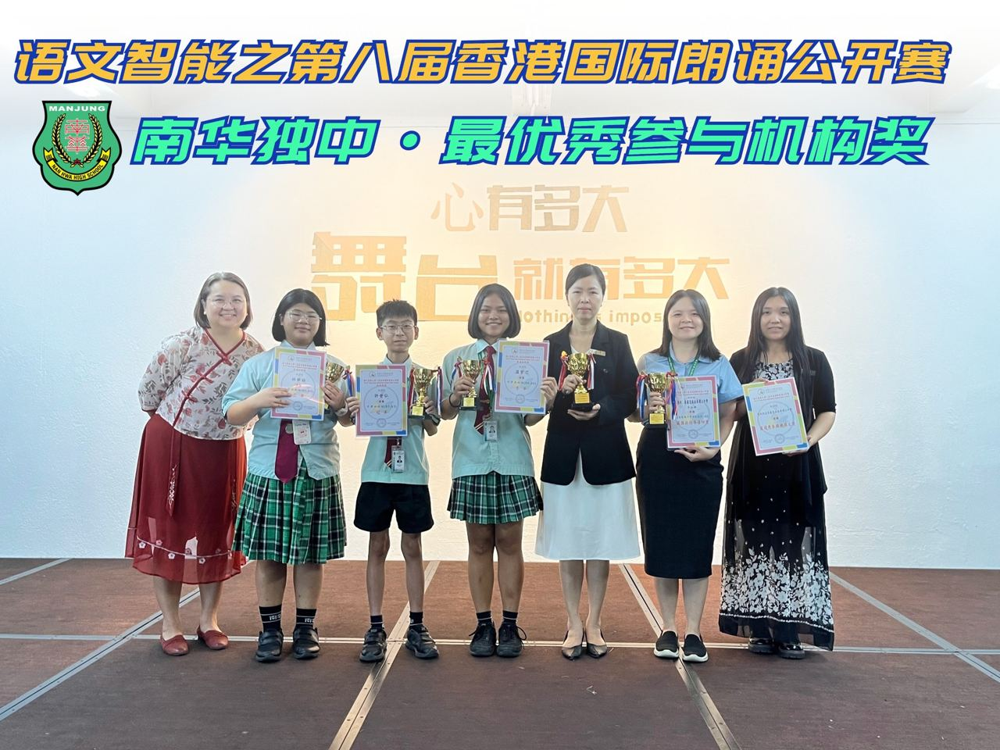
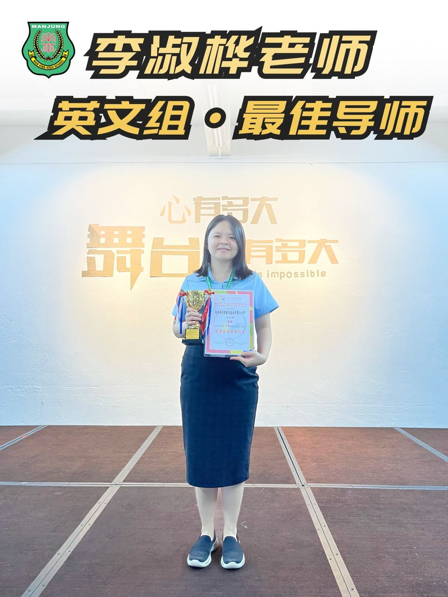
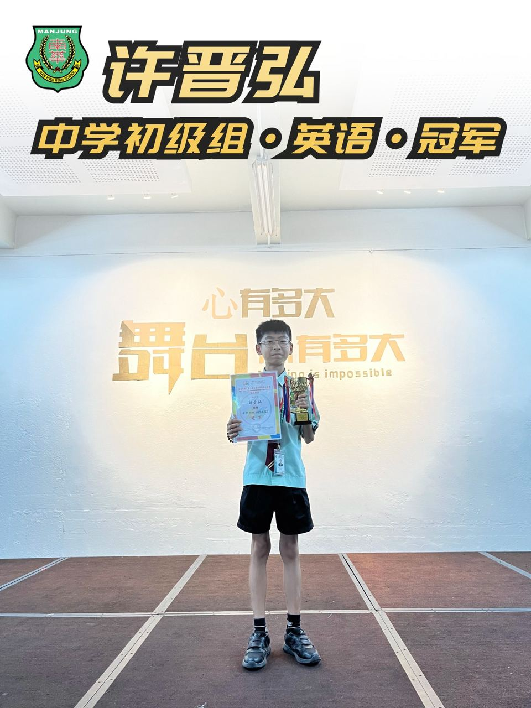
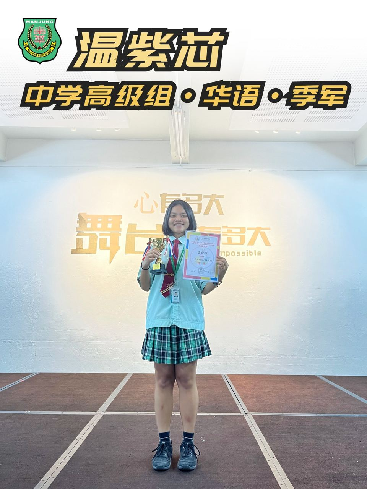
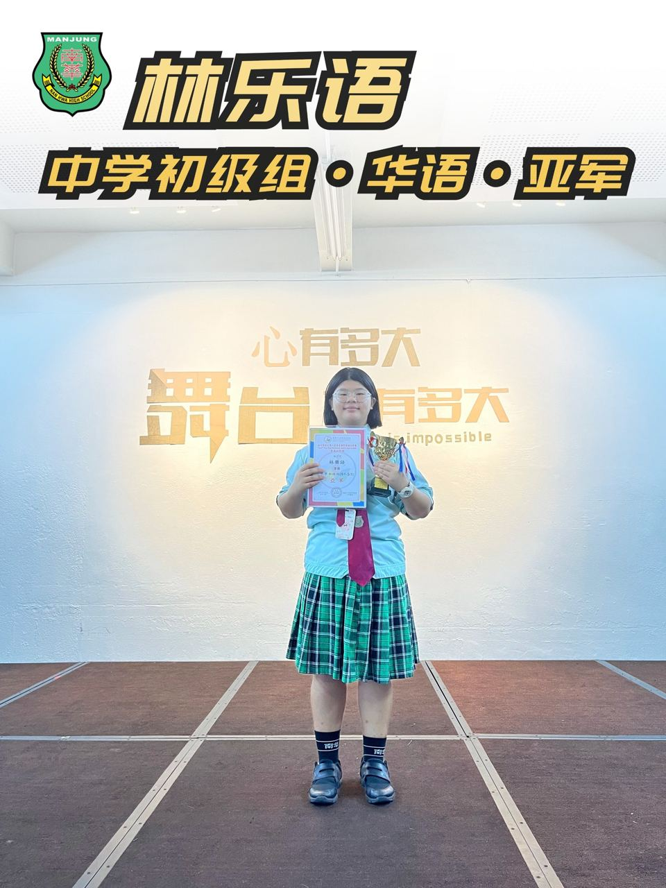

出战香港国际朗诵比赛
出战香港国际朗诵比赛
南华独中成绩斐然
南华独中在"语文智能之第八届香港国际朗诵公开赛"中取得骄人成绩，学生凭借卓越朗诵技巧斩获佳绩。在本次比赛中，南华独中不仅荣获"最优秀参与机构"奖项，英语指导老师李淑桦更是摘得"最佳导师"桂冠。
此次香港国际朗诵公开赛共吸引了来自香港、澳门、马来西亚及台湾等地区的参赛者参加。由南华独中英文科主任李淑桦老师指导英文朗诵，陈明芬老师及何欣霓老师则负责指导中文朗诵。南华独中学生们在华语和英语组别中均有出色表现，许晋弘同学在中学初级组中先声夺人，取得冠军宝座。林乐语同学获得中学初级组亚军、温紫芯与林极深同学则在中学高级组中分别获得季军与优异奖。
对于此次比赛的成功，英语组导师李淑桦老师在接受采访时表示："练习及参赛的过程中，学生们展示高度的热情和感情投入，这比任何奖项都更让我感到欣慰。"李老师强调，在学生训练过程中不仅需要注重朗诵技巧，更应该重视培养学生对文学的理解和感悟能力。
华文科主任廖丽华老师对于学生的表现给予高度的赞赏，并表示“对于南华独中学生能在以中文为官方语言的国家竞赛中脱颖而出，证明马来西亚的华语水平是备受国际肯定。学生优异的表现，验证了他们对母语的热爱，我为此感到骄傲。”
南华独中校长陈丽冰博士藉“不积跬步，无以至千里；不积小流，无以成江海”来肯定学生们平日里打下深厚扎实的基础，并对学生们的优异表现给予高度评价。陈校长认为此次比赛的成功，不仅体现了南华独中在语言教育方面的卓越成果，也展示了学生们在国际舞台上的竞争力。另外，陈校长亦对老师们的投入精力与时间培训学生表示衷心感谢。相信在未来，南华独中将继续培养更多优秀的语言人才，为社会输送高素质的双语人才。
成绩公布网站请点击下方链接：https://hkmie.org/blog/得奖名单/speech8result
#香港国际朗诵比赛 #最佳导师
#南华独中 #曼绒 #实兆远




